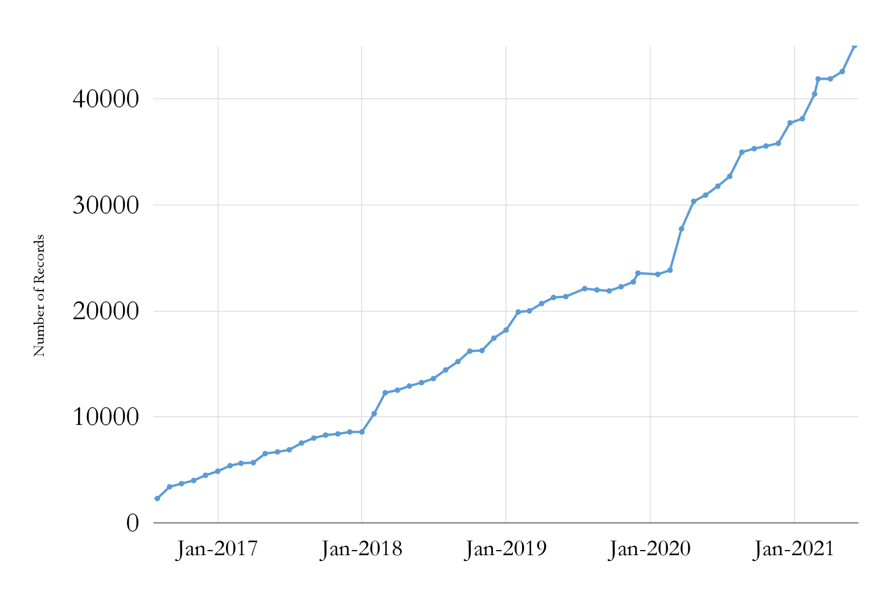
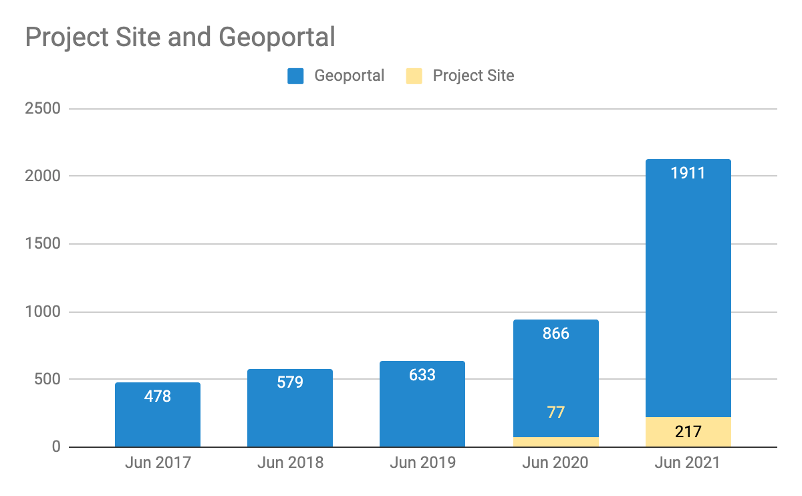

By Shirley Li This interview is part of our Data Provider Series, which highlights local governments and institutions that offer open GIS data. In each interview, providers tell us about their missions and data resources. We hope this will be a great way for readers to learn more about local GIS developments and new initiatives. Name:*
* Gary Motz Title:
* Assistant Director for Information Services Division/Department:
* Indiana Geological & Water Survey *Website:
* https://igws.indiana.edu/
What is the mission of your agency? The mission of the Indiana Geological
4 min read
Big Ten Academic Alliance Geospatial Data Project
Project Update: July 2021
Table of Contents
Project Highlight for July
MAGIRT/WAML Webinar
Seven project members co-presented a webinar titled “Big Ten Academic Alliance Geospatial Data: innovation and collaboration” for the map and geography professional organizations MAGIRT and WAML.
The talk diverged from most of our previous presentations in that it focused on our current collaborative committee work more than the general project genesis and structure. Topics included our educational tutorials\, the Diverse Collections working group\, application development\, usability testing\, promotional activities\, and our sprint model for collections\, metadata\, and blog posts.
Geoportal & Project Site* users for the months of July (2017-2021)
*Blog\, Help\, Tutorials\, Conference info
Statistics: Top Pages in July
Top Viewed Collection Pages
Top Viewed Item Pages
Top Downloaded Items
Wisconsin Historic Aerial Imagery Finder (Aerial Photos 1937-41) (191) Digital Sanborn Maps (Black & White): All States, 1867-1970 (116) General Land Office Township Plats: Michigan (29)+
Digital Sanborn Maps (Black & White): Massachusetts (76)+ Digital Sanborn Maps (Black & White): Virginia (47)+ Digital Sanborn Maps (Black & White): Michigan (47)+ Research Guide to Restricted or Licensed Data (47)+ Flood Hazard Areas: Stark County, Ohio (42)+
Traffic Analysis Zones, Council of Governments: Prince George's County, Maryland (9)+ Research Guide to Restricted or Licensed Data (7)+ 51N 37W - Survey Map of Bohemia Township, Ontonagon County, and Elm River Township and Laird Township, Houghton County: Michigan (7)+ General Land Office Township Plat - Original Survey: Minnesota (T038N R22W), 1852 (7) +
+ New to top pages
Activities: Committees
Metadata Committee
Met in July with new co-chair and updated charter
Discussed Interface Usability Study Report and Diverse Collections language proposal
Planning to discuss Publisher/Creator/Contributor terms at our next meeting
Collection Development & Education Outreach Committee
Reformed as dual committee
Co-chairs met in July to determine scheduling\, structure\, and agendas
Planning first meeting in August with new members
Communications Committee
Planning first meeting in August with new members
Interface Committee
Met in July with new co-chairs and updated charter
Working on final follow-ups to user testing feedback/suggestions
Proposing that other committees/working groups would visit Interface throughout this academic year.
Proposing “sprints” that would focus on interface functions/ideas.
Activities: Working Groups
Education Outreach Working Group (phase 2)
Sunsetted group
New tutorials ready to be published on project website
Diverse Collections Working Group
Work on summer projects is ongoing
Encouraging the group to surface “radical” ideas to bring to steering/task force and that could possibly inform the work of various committees during the current two-year term
Finalizing abstract for presentation at the WAML virtual conference (Oct. 26-29)
_August: _
New / Reorganized Committee chairs and members to meet
Kickoff planning meeting for the second BTAA GIS Virtual Conference this fall
By Wenjie Wang This interview is part of our Data Provider Series, which highlights local governments and institutions that offer open GIS data. In each interview, providers tell us about their missions and data resources. We hope this will be a great way for readers to learn more about local GIS developments and new initiatives.
Name:*
* Mark Yacucci Title:
* Head-Geoscience Information Division/Department:
* Illinois State Geological Survey *Website:
* https://isgs.illinois.edu/
####
Please briefly describe your role and what is the mission of your agency? The Prairie Research Institute benefits the people, economy, and
What is the item? This hand-colored view shows Brocken Mountain, the highest mountain in northern Germany, viewed from the northeast. The map covers the area that can be seen from the top of the mountain.
####
What BTAA Library submitted the item? University of Michigan
map detail: “Bructerus Herciniae montes supereminet omnes” -- Brocken towers above all mountains
####
Interesting tidbits:
* According to popular legend, Brocken Mountain is the site of
4 min read
Big Ten Academic Alliance Geospatial Data Project
Project Update: June 2021
Table of Contents
Project Highlight for June
Aardvark: New Metadata Schema in production
After nearly a year in development\, the GeoBlacklight community has endorsed a new metadata application schema (MAP)\, known as ‘Aardvark’.This schema incorporates additional fields for better descriptions of a wider range of resources\, as well as syntactical updates in order to improve interoperability between institutions and between other metadata standards.
For the BTAA Geoportal\, this schema improves usability in several ways. There are now established community guidelines for broadly categorizing items with users in mind. Users can filter by class (ex. Datasets\, Maps) and by form (LOC Cartographic genres or datasets geometry). There are also new fields for Rights\, Relationships\, and File sizes.
Many of these schema improvements came from customizations that the BTAA project already had in place. However\, many other changes came from incorporating the needs of new GeoBlacklight adopters. A GeoBlacklight Metadata Interest Group is ongoing\, led by the BTAA Project Manager\, and will continue to assess and refine the schema as needed.
Statistics: Item Records
Total Item Records
45\,018
June 2021 actions
Added 3360 records
830 Hixson atlas pages for Michigan
2466 PLSS Township plats for Michigan along with an index map
Iowa Mining Interactive Map
62 ArcGIS Hub records
Retired 76 records (ArcGIS Hub)

Statistics: Geoportal & Blog Users
Geoportal & Project Site* users for the months of June (2017-2021)
*Blog\, Help\, Tutorials\, Conference info

Statistics: Top Pages in June
Top Viewed Collection Pages
Top Viewed Item Pages
Top Downloaded Items
Wisconsin Historic Aerial Imagery Finder (Aerial Photos 1937-41) (216) General Land Office Township Plats: Michigan (174)+
Russian Military Topographic Map Collection (91)*+ Digital Sanborn Maps (Black & White): All States, 1867-1970 (81)+
Historical Aerial Photography: Harford County, Maryland, 1957 (22) +-- Bedrock geology of the Ely and Basswood Lake 30' x 60' quadrangles, northeast Minnesota, M-148 (20) + Remonumented Section Corners: Michigan (14) -- Kent County Parcel Data: Grand Rapids, Michigan (14) +--
* Google Ad Campaign item
+ New to top pages
-- Retired item
Activities: Application Development
First round of interface improvements
New homepage with map and text swapped
Can scroll on map now
Additional Aardvark metadata fields on item view pages
New icons tied to “Resource Class” instead of “Geometry Type”
July: WAML/Magirt webinar presented by all committee chairs
August: _ _New / Reorganized Committee chairs and members meet\, including a new committee\, called “Education Outreach”.
4 min read
Big Ten Academic Alliance Geospatial Data Project
Project Update: May 2021
Table of Contents
Project Highlight for May
GEOMG: New Metadata Editor Tool in production
This month\, we implemented an integrated metadata management and editing tool into our production workflow. This new tool\, GEOMG\, is a project that the Application Developer and the Project Manager/Metadata Coordinator have been working on for over a year.
The new tool streamlines several aspects of our processing workflow including:
records can be batch imported and exported as CSV files
records can be exported as a variety of GeoBlacklight schemas as JSON files
individual records can be created or updated using a form-based editor
records can be published or unpublished from Solr (index for the BTAA Geoportal)
the tool validates records upon upload for required elements\, duplicated IDs\, and malformed bounding boxes
We plan to continue refining GEOMG for our own use as well as to offer it as a plugin for the GeoBlacklight Community. In the few weeks that it has been in production\, we have been able to process thousands of new records more efficiently and with better quality control.
Statistics: Item Records
Total Item Records
42\,579
May. 2021 actions
2160 new records
3 new collections
1615 retired ArcGIS Hub records*
* A full refresh of ArcGIS Hubs revealed many outdated records .
Statistics: Geoportal & Blog Users
Geoportal & Project Site* users for the months of May (2017-2021)
*Blog\, Help\, Tutorials\, Conference info
Statistics: Top Pages
Top Viewed Items
Top Downloaded Items
Wisconsin Historic Aerial Imagery Finder (Aerial Photos 1937-41) (293)
By Jay Bowen This interview is part of our Data Provider Series, which highlights local governments and institutions that offer open GIS data. In each interview, providers tell us about their missions and data resources. We hope this will be a great way for readers to learn more about local GIS developments and new initiatives.
*
*
Name*
* : Casey James Kohrt Title:
* Geospatial Administrator Division/Department:
* Iowa Department of Natural Resources, GIS Department *
Website:
* https://geodata.iowa.gov
####
How long has the Iowa DNR created or maintained geospatial data? The Iowa DNR has been creating
By Milan Budhathoki This interview is part of our Data Provider Series, which highlights local governments and institutions that offer open GIS data. In each interview, providers tell us about their missions and data resources. We hope this will be a great way for readers to learn more about local GIS developments and new initiatives.
Name:*
* Julia Fischer Title:
* Director, Data Services and the Maryland Geographic Information Officer (GIO) Division/Department:
* Maryland Department of Information Technology (DoIT) *Website:
* https://imap.maryland.gov
####
Please briefly describe your role and what is the mission of your agency? Julia: As the Maryland
4 min read
Big Ten Academic Alliance Geospatial Data Project
Project Update: April 2021
Table of Contents
Project Highlight for April
Google Ad Campaign to reach new users
In anticipation of the increased traffic that occurs towards the end of academic semesters\, we experimented with a Google Ad Campaign to reach new users. We set up three targeted pages:
The homepage (generated 538 new users between Apr 12-May 4)
A landing page as a search query for Aerial Photography (generated 178 new users between Apr 22-May 4)
The total number of new users was 763\, and the cost of these campaigns totaled less that $200. See full report.
In the course of preparing for this campaign\, we gathered input from Task Force members on which items would benefit from ads. These could serve as landing pages for future campaigns.
Statistics: Item Records
Total Item Records
41\,893
Apr. 2021 actions*
New records: 8
* New records that were submitted in April are presently queued as the geoportal undergoes a metadata upgrade. They will be published in early May.
Statistics: Geoportal & Blog Users
Geoportal & Project Site* users for the months of April (2017-2021)
*Blog\, Help\, Tutorials\, Conference info
Statistics: Top Pages
Top Viewed Items
Top Downloaded Items
Wisconsin Historic Aerial Imagery Finder (Aerial Photos 1937-41) (280)